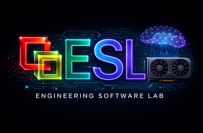

Amp vs. Anthropic's Graph Engineering
Why Your Graph Is Elegant — And Why Amp Already Implements It
A response to your LinkedIn post on Graph Engineering • July 2026


The Graph You Shared
Your LinkedIn post presents a “Full graph” architecture - the Graph Engineering framework you received from Anthropic, implemented in LangGraph. Read these as executable transition systems — not process art. This is impressive work. But let me show you what Amp already does natively.
FIG. 1 — Full graph
START → INTAKE → SPEC → PLAN → STRATEGY → MILESTONE LOOP → CLOSE_OUT → QA → VERDICT → DONE └── reopen ×2 ──┘
FIG. 2 — Milestone loop
BRANCH → IMPLEMENT → TEST → GATE_A → E2E (only if has_ui) → GATE_B → PR → CI → MERGE DEBUG (waits for human) → BRANCH
“Read it as a state machine, not a flowchart. Guards are evaluated in table order and exactly one must match.” — your post
What You're Actually Building
Your diagram isn't a flowchart — it's a finite state machine with guard conditions. Each transition is a guarded rule evaluated deterministically. This is serious engineering:
What LangGraph Gives You
- Graph definition: nodes are Python functions
- State object using TypedDict
- Conditional edges
- Guards as boolean predicates
- SQLite/Postgres checkpoint persistence
- Token-level streaming
What You Must Build Yourself
- 18 nodes total
- ~25 guard conditions
- State schema with 30+ fields
- Checkpoint/resume logic
- Human-in-the-loop integration
- Git, CI, tests, and PR API tools
What Your Code Actually Looks Like
Here's what a single node + guard from your milestone loop looks like in LangGraph:
class AgentState(TypedDict): request: str; spec: str; plan: list; strategy: str milestones: list; current: int; code: dict; tests: dict test_passed: bool; lint_errors: list; blocked: bool reopen_count: int; has_ui: bool; approved: bool; verdict: str def implement_node(state: AgentState) -> AgentState: response = llm.invoke(build_prompt(state)) state["code"] = dispatch_tools(response.tool_calls) return state def branch_router(state: AgentState) -> str: if state["blocked"] and state["strategy"] == "debug": return "debug" if state["blocked"] and state["reopen_count"] < 2: return "reopen" if all_done(state): return "close_out" if state["strategy"] == "D": return "stop_early" return "implement" graph.add_node("implement", implement_node) # ...seven nodes here graph.add_conditional_edges("branch", branch_router, routes) app = graph.compile(checkpointer=PostgresSaver(conn))
Every Node in Your Graph → Amp Built-in
Here's the key insight: every single node in your diagram has a native Amp equivalent that requires zero custom infrastructure.
| Node | What It Does in Your Graph | Amp Equivalent | Effort |
|---|---|---|---|
| INTAKE | Parse request | Agent conversation: you describe the task | Zero config |
| SPEC | Write formal spec | Agent writes spec; oracle validates | Zero config |
| PLAN | Decompose milestones | plan_before_acting + oracle | Zero config |
| STRATEGY | Select A/B/C/D | agent_mode: low/medium/high/ultra | Zero config |
| BRANCH | Select milestone | Task subagents for parallel milestones | Zero config |
| IMPLEMENT | Write code | edit_file, create_file, shell_command | Zero config |
| TEST | Run tests | shell_command runs tests inline | Zero config |
| GATE_A | Review quality | oracle: GPT-5.6 reasoning | Zero config |
| E2E | UI testing if has_ui | ui-preview skill + view_media | Skill load |
| GATE_B | Final review | oracle holistic intent review | Zero config |
| PR | Create pull request | thread_interact ship_or_push_changes | Zero config |
| CI | Run CI | shell_command local CI | Zero config |
| MERGE | Merge main | thread_interact workflow | Zero config |
| DEBUG | Wait for human | Native approval model | Zero config |
| CLOSE_OUT | Summarize | Final summary + read_thread | Zero config |
| QA | Final quality | oracle + verification loop | Zero config |
| VERDICT | PASS/BLOCK/FAIL | Agent report + wait_for_threads | Zero config |
| reopen ×2 | Return to loop | Loop until success criteria pass | Zero config |
How Amp's Tool Stack Replaces Your Graph
No graph code needed. This is Amp's execution model:
USER REQUEST → AMP AGENT (MAIN THREAD) 01 Read code 02 Plan 03 Review plan 04 Implement 05 Test 06 Gate A 07 E2E / UI 08 Gate B 09 Ship 10 CI 11 Verify 12 Report ┌── MULTI-AGENT ─────────────────────────────────────────┐ │ create_thread → Task A │ Task B │ Task C │ │ wait_for_threads → integrate │ └─────────────────────────────────────────────────────────┘ ┌── HUMAN-IN-THE-LOOP ─────┐ ┌── SCHEDULING ───────────┐ │ approval model │ │ set_schedule │ │ user steering │ │ update_schedule │ └───────────────────────────┘ └─────────────────────────┘
Core Tools
Read, search, edit, create, shell, browser, media, git workflows.
Intelligence Layer
Oracle review, subagents, context-aware planning, and semantic verification.
Lifecycle & Ship
Approvals, retries, tests, CI, PR, merge, schedules, and final reporting.
Oracle: A Smarter Gate Than Hand-Coded Rules
Your GATE_A and GATE_B nodes use static guard conditions. Amp's oracle uses GPT-5.6 reasoning to review the actual diff.
LangGraph: static checks
def gate_a(s): if s["failed_tests"]: return "reject" if s["lint_errors"]: return "reject" if s["diff_lines"] > 500: return "review" return "pass" # Knows only predefined failures. # Cannot assess intent or architecture.
Amp: semantic review
oracle( "Review this diff against the user's intent. Check semantics, architecture, race conditions, type safety, regressions, and missing tests. Return concrete findings with evidence." ) # Reads the diff and reasons about what changed. # Finds risks you did not know to encode.
| Capability | LangGraph gate | Amp oracle |
|---|---|---|
| Deterministic output | ✅ | ❌ |
| Catches predefined failures | ✅ | ✅ |
| Unanticipated bugs / intent mismatch / drift | ❌ | ✅ |
| Architectural risk and type safety | ❌ | ✅ |
| Auditable for compliance | ✅ | Partial |
| Zero maintenance | ❌ | ✅ |
| Effort | Days per gate | One tool call |
Your Milestone Loop Without the Loop
Your graph processes milestones sequentially through the loop. Amp parallelizes them natively.
LangGraph: sequential
M1: IMPLEMENT→TEST→GATE→E2E→GATE→PR→CI→MERGE M2: IMPLEMENT→TEST→GATE→E2E→GATE→PR→CI→MERGE M3: IMPLEMENT→TEST→GATE→E2E→GATE→PR→CI→MERGE
Parallelism requires custom fan-out, state management, dependency handling, error states, and fan-in.
Amp: native fan-out
create_thread(task="Milestone 1") create_thread(task="Milestone 2") create_thread(task="Milestone 3") wait_for_threads(ids) oracle("Review integrated result")
About 10-20 lines of orchestration, including review.
| Concern | LangGraph | Amp |
|---|---|---|
| Parallel execution | Custom code | create_thread × N |
| Join | Custom fan-in | wait_for_threads |
| Dependencies | Custom guards | Spawn order |
| Failure isolation | Custom error state | Failed thread doesn't block others |
| Lines of code | 500-800 | 10-20 |
Your DEBUG Node vs. Amp's Native Approval
Your diagram says DEBUG “waits for a human.” Here's what that costs in LangGraph vs. what Amp gives you for free:
LangGraph
def debug_node(state): ticket = notify_human(state, channel="slack") answer = wait_for_approval(ticket, timeout=86400) return process_response(state, answer)
~300-500 lines of glue: notification, approval API, webhook, timeout, serialization, resume logic, and UI.
Amp approval model
Zero code. Amp pauses naturally at a decision point. You type:
- “Yes, proceed.”
- “No, try X.”
- “Let me check.”
thread_interact gives you explicit steering of child threads.
Capabilities Your Diagram Doesn't Cover
Amp has features your state machine doesn't even address:
Scheduling & Monitoring
set_schedule with RRULE and update_schedule. LangGraph has no scheduler; you'd add cron, Celery, or Airflow.
Skills System
20+ domain packages: building-schedules, ui-preview, claude-mythos-cve, parasoft-static-analysis, stm32f103c8-bluepill-dev. No LangGraph equivalent.
External Code Understanding
Librarian reads GitHub repositories. LangGraph needs custom RAG plus a vector database.
Web Research
web_search + read_web_page. LangGraph needs custom tools and a search API.
Where Your Approach Still Wins
This isn't one-sided. Your Graph Engineering approach has real advantages in specific scenarios:
1. Deterministic, Auditable Transitions
Your Python guards can prove the machine never enters an invalid state. Critical for FDA 510(k), ISO 26262, IEC 62304, and DO-178C.
2. Custom Tool Integrations
Proprietary APIs at each node are more flexible in LangGraph — important for enterprises with bespoke toolchains.
3. Visual Audit Artifacts
Your diagram is a real, inspectable artifact an auditor can trace. Amp execution is conversational.
4. Cost Control & Token Budgets
You control which nodes call LLMs and which are pure logic. Amp consistently relies on LLM reasoning.
For Your Regulated-Industry Work
If you're working in regulated spaces (and I know you are), here's the decision matrix:
| Scenario | Use Amp | Use LangGraph | Hybrid |
|---|---|---|---|
| Exploratory development | ✅ Amp | Overkill | — |
| SBOM generation | ✅ Amp | Overkill | — |
| Code fixes & refactoring | ✅ Amp | Overkill | — |
| Security reviews | ✅ Amp + skills | — | Amp reviews; graph formalizes |
| FDA submission pipeline | — | ✅ Audit | Amp works; graph proves process |
| ISO 26262 safety case | — | ✅ Audit | Amp implements; graph validates |
| CI/CD automation | ✅ Amp + scheduling | — | — |
| Formal review gates | ✅ Oracle | If auditable | Oracle + graph audit log |
18/18 nodes
deterministic trace
Amp executes + graph audits
Complete Workflow: Your Graph vs. Amp
Task: Implement a feature, test it, review it, and ship it.
LangGraph — ~1,200 lines
class State(TypedDict): # 50 state fields # 18 node functions # 25 guard functions # graph assembly and conditional edges # checkpointer.compile() # app.invoke(initial_state) # ~500 lines of tests
Amp — ~15 lines, zero infrastructure
# You ask for the feature, then Amp uses: finder("Locate feature architecture") read_file(paths) oracle("Review implementation plan") edit_file(...); create_file(...) shell_command("run focused tests") oracle("Gate A: review diff") skill("ui-preview"); view_media(...) oracle("Gate B: holistic review") thread_interact("ship")
| Metric | LangGraph | Amp |
|---|---|---|
| Infrastructure / test code | 1,200 / 500 lines | 0 / 0 |
| State fields / guards | 50 / 25 | 0 / 0 |
| Build time | 4-8 weeks | 0 minutes |
| Add node | 2-5 days | Just ask |
| Maintenance | Ongoing | None |
| Deterministic auditability | Full | Conversational |
| Intelligence per gate | Static | GPT-5.6 |
The Verdict for You, Ron
Use Amp When...
- You want to ship features, not infrastructure
- Your small team can't afford 4-8 weeks
- You need intelligent code review
- You want parallel milestones without fan-out code
- You need built-in scheduling
- You value domain skills and web research
- The work is exploratory, not regulated
- You want zero orchestration maintenance
- You need to iterate fast
- You want a complete tool stack immediately
Use Your Graph When...
- Transitions must be provable to an auditor
- FDA, ISO, IEC, or DO-178C governs the work
- FSM diagrams are formal deliverables
- You need bespoke tool integrations
- You need explicit LLM cost control
- You have a dedicated platform team
- Checkpoint/resume needs formal serialization
- The same input must follow the same path
Complete Feature Comparison
Print this as your one-page decision matrix.
| Capability | Amp | LangGraph |
|---|---|---|
| Intake / Spec | Native conversation + oracle | Build nodes |
| Planning | Native | Build node |
| Strategy selection | Agent mode | Custom guard |
| Implementation | Built-in tools | Custom tools |
| Testing | Shell inline | Build integration |
| Code review gate | Oracle reasoning | Static/custom |
| E2E / UI testing | Skill + browser + media | Custom |
| Final review | Oracle | Build node |
| PR creation / Merge | Native workflow | API integration |
| CI pipeline | Shell/workflow | Custom tool |
| Debug / human wait | Native approval | Build node + UI |
| Close-out / Summary | Native | Build node |
| QA verdict | Reasoned | Guard logic |
| Reopen / Retry | Native loop | Edges + state |
| Parallel milestones | create_thread | Custom fan-out |
| Scheduling | Built-in RRULE | External scheduler |
| External code understanding | Librarian | Custom RAG |
| Web research | Built-in | Custom API |
| Domain expertise | Skills | Custom prompts/tools |
| Determinism | Partial | Full |
| Auditability | Conversation history | Formal state trace |
| Infrastructure code | Zero | 3,000-5,000 lines |
| Time to build | Immediate | 4-8 weeks |
| Maintenance | Platform-managed | Your team |
| Cost per task | LLM-heavy | Controllable |
| Intelligence per gate | Semantic reasoning | Encoded rules |
Build Software, Not Infrastructure
Your state machine is already built. Try Amp.
Ron, your diagram is architecturally elegant — a formal state machine with 18 nodes, 25 guards, and deterministic transitions. It's also 4-8 weeks of infrastructure work that Amp gives you for free on day one.
Every node in your graph — INTAKE, SPEC, PLAN, STRATEGY, IMPLEMENT, TEST, GATE_A, E2E, GATE_B, PR, CI, MERGE, DEBUG, CLOSE_OUT, QA, VERDICT — has a native Amp equivalent that requires zero code.
The one thing Amp can't give you is the formal audit trail your hand-built state machine provides. For regulated work, that's real. The solution isn't to build the whole graph in LangGraph — it's to let Amp do the work and wrap it in a thin compliance layer.
Try Amp at https://ampcode.com • Published July 2026